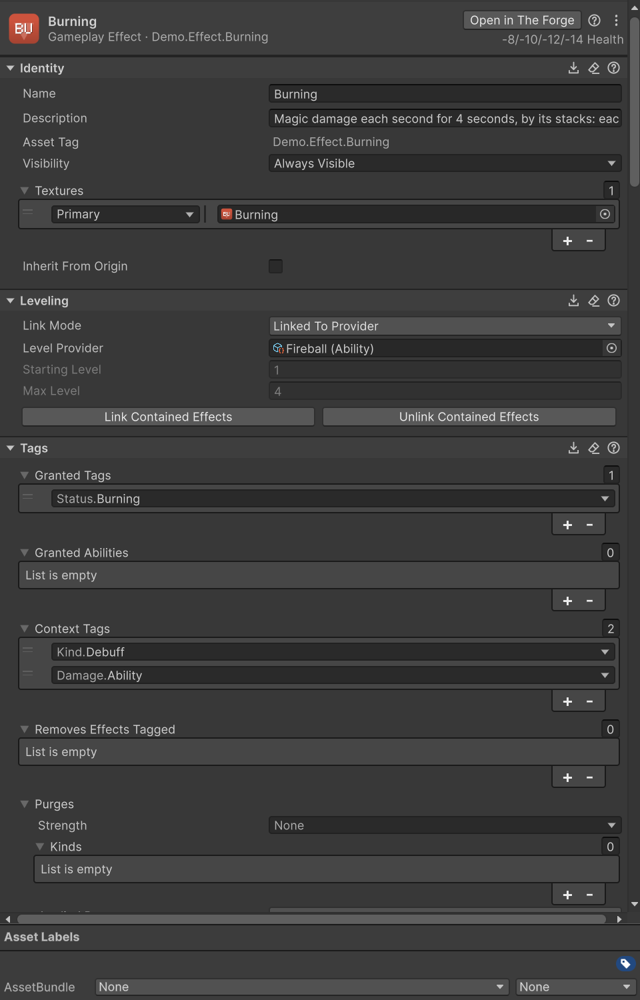

Gameplay Effects
A Gameplay Effect asset describes a change to an entity: damage, a heal, a timed buff, a poison, a cost or a cooldown. An effect can change attributes (numbers such as Health), grant tags, apply other effects and run workers.
classDiagram
class GameplayEffect:::asset {
<<ScriptableObject>>
+Definition : GameplayEffectDefinition
+Tags : GameplayEffectTags
+ImpactSpecification : GameplayEffectImpact
+DurationSpecification : GameplayEffectDuration
+Components : List~AbstractEffectComponent~
+Find() T, its first component that is a T
its cues in a Cues component
+Workers : List~AbstractEffectWorker~
+Generate(IEffectOrigin origin, ITarget target) GameplayEffectSpec
}
class GameplayEffectDefinition:::asset {
+Name
+Description
+Visibility
+Textures
+InheritFromOrigin : bool
+OriginTexture
}
class GameplayEffectTags:::asset {
+AssetTag
+ContextTags
+GrantedTags
+RemovesEffectsTagged
+BlocksEffectsTagged
}
class GameplayEffectImpact:::asset {
<<Serializable>>
the authored first impact, plus more
+AttributeTarget
+ImpactOperation : ECalculationOperation
+MagnitudeOperation : ScalableFloat
+Pipeline : ValuePipeline
+AdditionalImpacts : List~AttributeImpactEntry~
+Entries, NonSerialized, rebuilt on every Generate
+RebuildEntries(duration)
+ResolveDelivery(duration, out warning) EImpactDelivery
}
class AttributeImpactEntry:::asset {
+AttributeTarget
+Delivery : EImpactDelivery
+Operation
+Magnitude : ScalableFloat
+Pipeline
+SortOrder
}
class EImpactDelivery:::rt {
<<enumeration>>
Continuous
OnApply
Periodic
}
class GameplayEffectDuration:::asset {
+DurationPolicy : EEffectDurationPolicy
+DurationOperation
+EnablePeriodicTicks : bool
+TickIntervalOperation
+ReApplicationPolicy
+StackPolicy
+GenerateContainer(spec, ongoing) AbstractEffectContainer
}
class EEffectDurationPolicy:::rt {
<<enumeration>>
Instant
Durational
Infinite
}
class EffectTagRequirements:::asset {
+ApplicationRequirements
+OngoingRequirements
+RemovalRequirements
}
class EffectConditions:::asset {
+Application : List~GameplayCondition~
+Ongoing
+Removal
}
class GameplayEffectSpec:::rt {
one application
+Base : GameplayEffect
+Origin : IEffectOrigin
+Target : ITarget
+ApplicationId
+RuntimeContainer : AbstractEffectContainer
+SetByCaller(Tag, float)
+GetImpactersFor(IAttribute, EImpactDelivery)
+GetIcon() Texture2D, the origin's when inherited
}
class IAttributeImpactCarrier:::ext {
<<interface>>
origin, target, attribute, impact types
}
class ICarrierApplication:::ext {
<<interface>>
the facet that can be applied
}
class IAttributeImpacter:::ext {
<<interface>>
+Operation
+TargetSlot
+SortOrder
+Pipeline
+Evaluate(carrier) float
}
class ScalerImpacter:::rt {
one per entry, reads the live ScalableFloat
}
class ConstantImpacter:::rt
class IHasTextures:::ext {
<<interface>>
+GetTextureItems()
}
GameplayEffect *-- GameplayEffectDefinition
GameplayEffect *-- GameplayEffectTags
GameplayEffect *-- GameplayEffectImpact
GameplayEffect *-- GameplayEffectDuration
GameplayEffect *-- EffectTagRequirements : Source and Target
GameplayEffect *-- EffectConditions
GameplayEffectImpact "1" *-- "many" AttributeImpactEntry : AdditionalImpacts
AttributeImpactEntry --> EImpactDelivery
GameplayEffectDuration --> EEffectDurationPolicy
GameplayEffect ..> GameplayEffectSpec : Generate
IHasTextures <|.. GameplayEffect
IAttributeImpactCarrier <|-- ICarrierApplication
ICarrierApplication <|.. GameplayEffectSpec
GameplayEffectSpec "1" *-- "many" ScalerImpacter
IAttributeImpacter <|.. ScalerImpacter
IAttributeImpacter <|.. ConstantImpacter
classDef rt fill:#FFE86D,stroke:#CBB333,color:#574900
classDef ext fill:#A0C4FB,stroke:#6A8BBF,color:#14315E
classDef asset fill:#B8ACFB,stroke:#7D6DD4,color:#231266
The first impact entry is derived on every Generate() and never serialized. The Additional Impacts are authored entries, each with its own delivery. A spec's icon can come from its origin.

Burning's inspector.
An entity is anything that runs a gameplay ability system (GAS), such as the player or an enemy. Abilities and items apply effects to a target entity, and so can your code. The ability, item or entity that applies an effect is its origin.
The duration's Policy decides how long an effect lives. An Instant effect makes its change once and is done.
A Durational or Infinite effect goes on the target's effect shelf, its list of active effects. It stays until its time runs out or something removes it.
The kind of change follows from the Policy:
| Effect | Delivery | The change |
|---|---|---|
| Instant | OnApply | one permanent commit, such as "take 30 damage" |
| Durational or Infinite, no ticks | Continuous | a modifier while the effect is active, reversed exactly when it ends |
| Durational or Infinite, periodic ticks | Periodic | one permanent commit per tick, such as "5 Health per second" |
A commit stays after the effect ends. A modifier doesn't. Effect & Attribute Pipeline has the full model.
Tags are names, such as State.Stunned, that an entity carries and that requirements check. Each asset stores a tag
made from its Name: Fireball Damage gives Effect.FireballDamage.
Each section below matches the inspector section of the same name.
In this guide
- Identity: The Identity section names the effect, gives its asset tag, and holds what your UI shows of it.
- Leveling: An effect has no level of its own.
- Tags: The Tags section sets what the effect grants its target while it's on, and which other effects it removes, purges or blocks.
- Purging: Purging takes effects off an entity by strength.
- Duration: The Duration section sets how long the effect lasts, how it ticks, and what another application of it does.
- Impact: The impact is the change the effect makes to an attribute.
- Levels: The effect's levels say what it does, level by level.
- Cues: What the effect shows and sounds, apart from what it changes, plays from its Cues component.
- Requirements: The Requirements section decides whether the effect lands, keeps working and comes off.
- Components: An effect's components are features it carries.
- Workers: The Workers section holds what runs for the effect beside its impacts.
- Local Data: Local Data is a list of named values stored on the asset.
- Used By: Used By lists the PlayForge assets that refer to this effect, each with its type icon, such as an ability whose cost it is or an item that grants it.
- Built-in kinds: The kinds PlayForge ships for this guide's pickers, each with its menu and what it does, as its picker says.
In the API
The types of this guide's area: AbstractEffectChange, AbstractEffectConfig<T>, AbstractEffectContainer, AbstractPurgeFilter, AbstractStackingConfig, AbstractStackingEffectContainer, AddContainedEffectChange, AddOverflowChange, AreaEffectComponent, AttributeImpactEntry, AttributeTransfer, AvoidRequireTagGroup, AvoidRequireTagGroup.ValidationResult, ChanceChange, ChangeImpactChange, ConstantImpacter, ContainedEffectPacket, ContainedEffects, ContainedEffects.Enumerator, DurationChange, EAddBehaviour, EAffiliationPolicy, EApplyTickRemove, EAttributeTarget, EAttributeTargetBinary, EAttributeTargetExpanded, EAttributeTargetLimited, EEffectCategory, EEffectDurationPolicy, EEffectInteractionPolicy, EEffectReApplicationPolicy, EEffectRecipient, EEffectStackPolicy, EffectChanges, EffectChanges.ImpactStage, EffectChanges.Packet, EffectConditions, EffectDurationRemaining, EffectModifier, EffectModifierEntry, EffectModifierRule, EffectModifiers, EffectModifierSet, EffectPurge, EffectTagRequirements, EImpactDelivery, EMagnitudeOperation, EModifierDirection, EMultiplyBehaviour, EPurgeRelation, ERoundingOperation, ESpreadMoment, EStackBoundsOnMaxPolicy, ExceptTaggedPurgeFilter, ForgePurge, GameplayEffect, GameplayEffectDefinition, GameplayEffectDuration, GameplayEffectImpact, GameplayEffectSpec, GameplayEffectTags, GameplayPipelineConfiguration, GrantTagsChange, IAffiliated, IAttributeImpactCarrier, IAttributeImpacter, ICarrierApplication, IEffectOrigin, IHasReadableDefinition, IHasTextures, ImpactData, ImpactDerivationContext, IndependentDurationsContainer, InitializationOperation, LevelerEffectOrigin, LevelerImpactDerivation, NonStackingEffectContainer, PurgeContext, PurgeLevels, PurgeTier, RequirementTemplate, ScalerImpacter, SideChangeEffectComponent, SingleDurationEffectContainer, SourceAttributeImpact, SourceEffectOrigin, SpreadEffectComponent, StackAmountOperation, StackBoundsConfig, StackQueueEffectContainer, StacksChange, TrackedImpact, TransferEffectComponent.